CS 280A / Project 4 / Parts A & B
Image Warping
and Mosaicing
I start by clicking matching points to warp and join photos. Then I build an automatic pipeline that finds corners, matches image patches, and uses RANSAC to stitch the same scenes.
Part A / Image warping and mosaicingManual stitching ↓
Homographies, image rectification, blending, and cylindrical projection.
Part B / Feature matching for autostitchingAutomatic stitching ↓Harris corners, patch descriptors, RANSAC, and a multiscale extension.
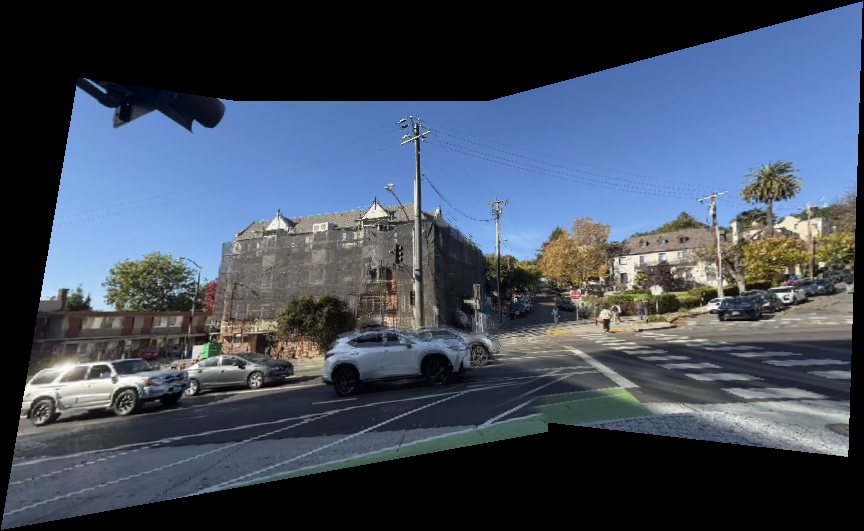
A.1 Photos
The input photos
I took two sets of three photos on campus: a street corner and a building beside a lawn. The boat pair is from the Internet. The book and Sudoku photos are the supplied rectification inputs.
The views overlap enough to share roof corners, windows, and poles. A single homography can align a flat surface, or views taken by rotating the camera around one fixed point. Objects at different distances are harder to align if the camera also changes position.


Building and lawn


Boat and riverbank


| Set | Original | Working size | Sampling |
|---|---|---|---|
| Both campus sets | 1707 × 1280 | 427 × 320 | Every fourth pixel |
| Boat pair | 3888 × 2592 | 972 × 648 | Every fourth pixel |
The Part A boat results were regenerated with ten newly selected point pairs and scale = 4. The original boat point file and run settings are no longer available. The sizes above describe the new run. The campus results are the supplied outputs.
A.2 Homographies
Finding the homography
I selected ten matching point pairs in each example below. The numbers mark the same scene locations in both views. A 3 × 3 matrix, H, maps the source coordinates to the reference view.

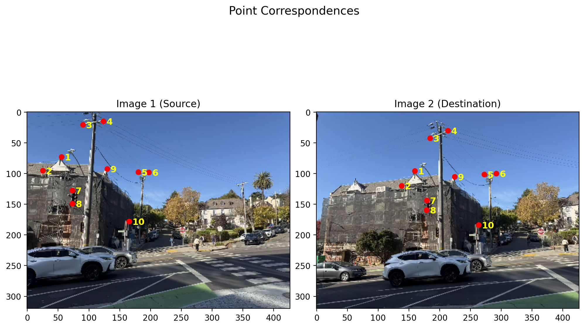

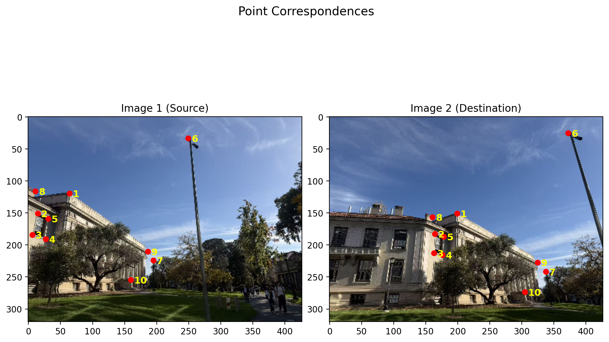
From points to a matrix
Setting the bottom-right value of H to 1 leaves eight unknowns. A source point (x, y) and its reference point (u, v) satisfy:
u = (h11x + h12y + h13) / (h31x + h32y + 1)
v = (h21x + h22y + h23) / (h31x + h32y + 1)
Each point pair gives two linear equations. Ten pairs give 20 equations for eight unknowns, so I solve Ah = b with least squares. This uses all the selected points instead of fitting only four pairs exactly.
xy1000−ux−uy000xy1−vx−vy
h =(u, v)Th = (h11, h12, h13, h21, h22, h23, h31, h32)T
Two fitted matrices
These matrices map the right photo into the middle photo. Errors are measured over the ten selected pairs at the working resolution.
Street corner, right to middle
0.5771070.103012113.462351−0.2286900.86646941.668244−0.0010421930.0002028651
Mean error: 0.928 px; maximum: 2.091 px
Building and lawn, right to middle
0.4623320.030966144.648755−0.2975650.72654867.675500−0.001163035−0.0002615351
Mean error: 1.203 px; maximum: 2.033 px
These errors check the selected points. They do not measure alignment across the whole scene.
A.3 Rectification
Rectifying two images
I map four selected corners to a rectangle. The warp works backward: for each output pixel, H−1 gives a position in the source photo. After dividing by the last coordinate, I sample the color at that position.
(x, y, w)T = H−1(u, v, 1)T
Source position = (x / w, y / w)
Book cover
Output: 600 × 450 px.

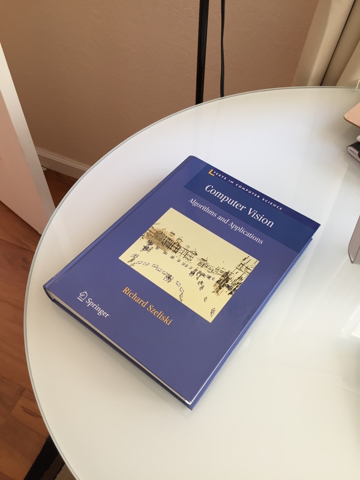


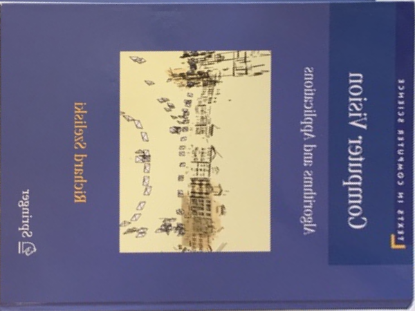
The cover becomes rectangular. Along the white title and yellow border, bilinear interpolation reduces the stair-step edges visible in the nearest-neighbor result. The smallest print remains blurred.
Sudoku grid
Output: 500 × 500 px.

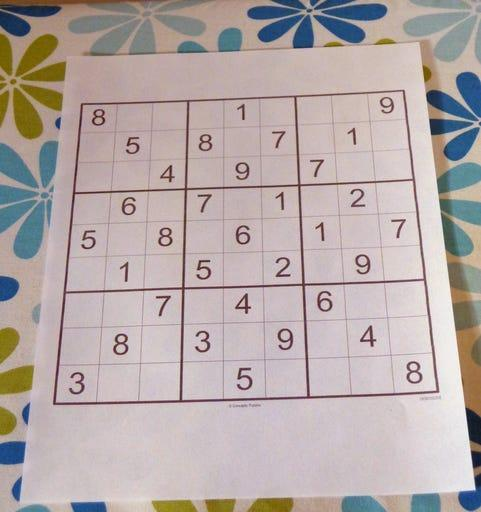

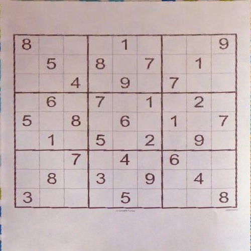

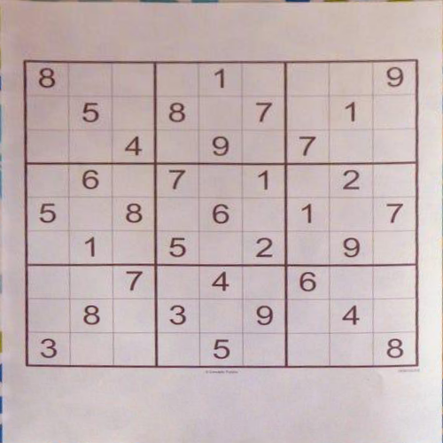
The perspective tilt is removed: the rows are horizontal and the columns are vertical. The grid remains wider than it is tall, so its proportions are not fully restored. The printed digits are readable in both results.
Interpolation and running time
Nearest neighbor copies the closest source pixel. Bilinear interpolation mixes the four pixels around the source position, with more weight on closer pixels. This smooths diagonal edges, but can reduce contrast in thin lines and small letters.
I(x, y) ≈ (1 − α)(1 − β) I00 + α(1 − β) I10
+ (1 − α)β I01 + αβ I11
α and β are the fractional distances from the upper-left pixel in the x and y directions.
| Image | Output size | Nearest neighbor | Bilinear | Time ratio |
|---|---|---|---|---|
| Book | 600 × 450 | 0.482 s | 1.083 s | 2.25× |
| Sudoku | 500 × 500 | 0.434 s | 0.987 s | 2.28× |
Bilinear took about 2.2–2.3 times as long in these tests. I would use it for the final images because the book title and grid edges are smoother. Nearest neighbor is useful for a quick preview when rough edges are acceptable.
Timing setup and enlarged edges
Measured with time.perf_counter on an Apple M5 MacBook Air, Python 3.11.7 and NumPy 1.26.4. I used the warp functions in main.py without changing them. Each method had one warm-up and five measured runs, with the order alternated. Loading, selecting points, plotting, and saving were excluded. The original rectification points were not saved, so I fitted H from matching pixels in the source and saved nearest-neighbor image. Both methods used this same fixed H within each test.
Book, nearest neighbor (3×)
Book, bilinear (3×)
Sudoku, nearest neighbor (3×)
Sudoku, bilinear (3×)
A.4 Mosaics
Combining the photos
I use the middle photo as the reference for each campus set, and the second photo for the boat pair. Mapping the source corners gives the full output bounds. A translation moves those bounds into the canvas, and bilinear interpolation fills the warped photos and weight maps.
Blending the overlap
Pixels farther from a source edge get more weight. From these weights, I form a mask m for the existing image:
a = wexisting / (wexisting + wnew)
m = a3 / (a3 + (1 − a)3)
The blend uses a two-layer stack, with both layers at the same canvas size. A 13 × 13 Gaussian filter with σ = 2 gives the low-frequency layer; subtracting it from the image gives the high-frequency residual. I blend the low-frequency layers with a Gaussian-smoothed mask and the residuals with the original mask, then add the two results.
Campus street corner

The main roof and tall utility pole join closely. Around the white SUV and gray car, the roof and front edges split into two outlines. The small signs behind them fade into the overlap, and the white road markings break near the bottom.
At the upper left, the traffic light ends in midair because its support lies outside the captured area. Blending cannot fill that missing part.
Campus building and lawn

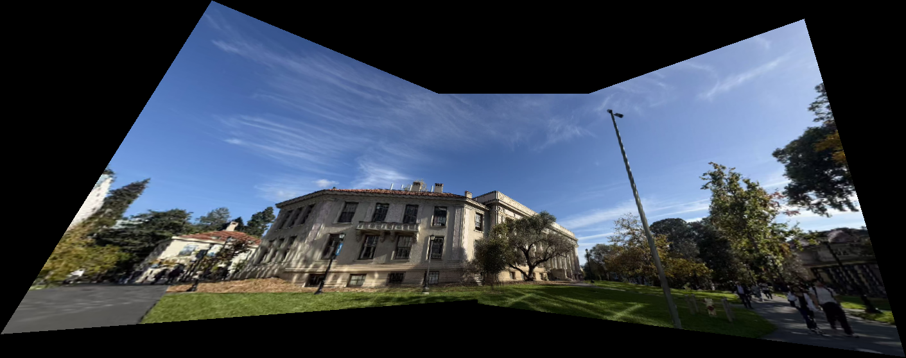
The building spans the full view, with strong stretching at both ends. In the middle, several window frames have double edges and the wall loses detail. The trees and people beside the right path are also blurred by the stretched view. The reduced working size limits detail before the photos are even warped.
Boat and riverbank

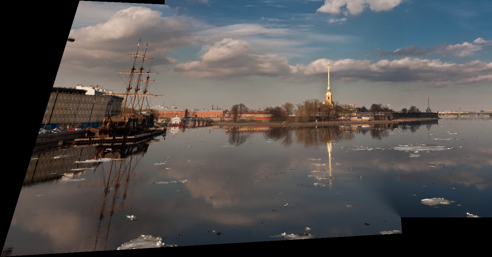
The ship and golden tower remain easy to recognize. Along the middle of the riverbank, branches and building edges mix together; the water also changes brightness across the overlap. Compared with the campus sets, this distant scene has fewer large foreground objects to align.
New output: 1461 × 766 px, saved directly from the mosaic array.
Blending can hide a color boundary, but it cannot align two misplaced edges. Their average may become a double outline or a blurred patch. Point-selection error, a change in camera position, and scene movement are possible causes here.
Black areas have no source image data.
A.5 Cylindrical mapping
Changing the projection
A planar panorama stretches the outer views. Cylindrical mapping wraps each photo around a cylinder, reducing this stretching. With coordinates centered at (cx, cy), the mapping is:
x = xpixel − cx, y = ypixel − cy
u = f arctan(x / f), v = fy / √(x2 + f2)
f is the cylinder radius in pixels, set to 0.8 times the width of the reference working image.
I project the selected points and use their median coordinate difference to estimate a shift for each view. To sample the image, I subtract this shift and map the cylinder coordinates back to the source photo:
xpixel = f tan(u / f) + cx, ypixel = v / cos(u / f) + cy
The source colors use bilinear interpolation and the same two-layer blend.
Building and lawn

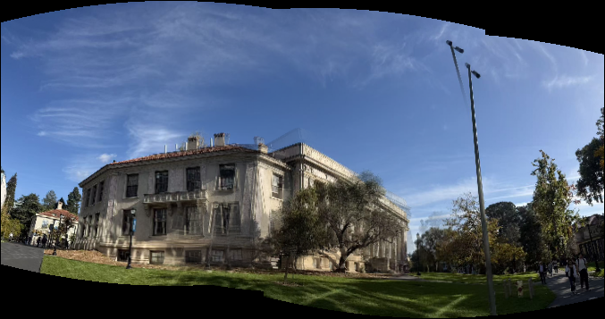
Cylindrical mapping keeps the building closer to its original shape. The tall lamp pole now appears twice, with separated heads and overlapping lower sections. There is also a second roof edge on the right side of the building. Across the upper sky, the brightness changes in bands where the views meet. The planar result aligns the pole more closely.
Street corner

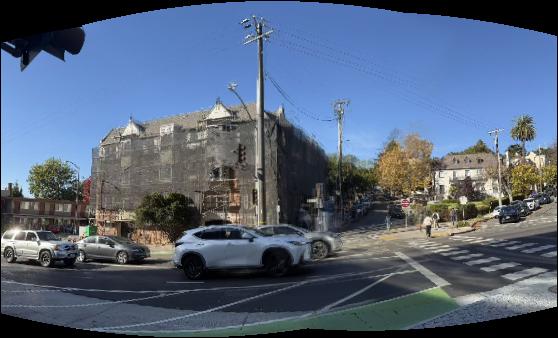
The cylindrical view is more compact and the road bends across the bottom. It does not fix the overlap around the cars and signs. For this set, the main gain is the shape of the outer views.
Boat and riverbank

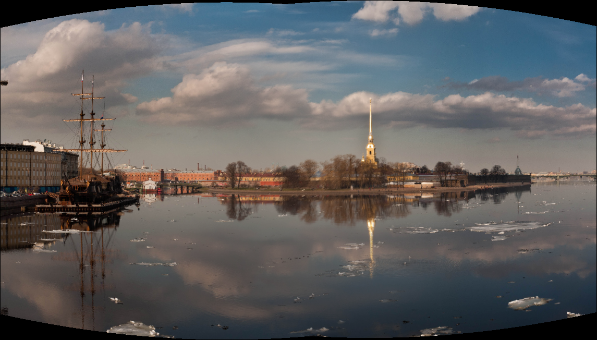
The cylindrical view reduces the stretch on the left and gives the river a more balanced shape. The trees and low buildings to the left of the golden tower have mixed edges, and the tower is less sharp than in the planar version. I prefer the cylindrical outline, but the planar image keeps more detail around the tower.
New cylindrical output: 1145 × 652 px; f = 777.6 px.
The cylindrical alignment uses shifts only. It does not correct changes in camera tilt or position.
What I learned
in Part A
Getting the points to line up is only part of the problem. The camera position and the depth of the scene matter too. I noticed this most in the campus photos, where nearby objects do not always follow the same warp as the building.
The projection also needs to suit the scene. I prefer the cylindrical shape for the wider building view, while its repeated roof and pole show the limits of using shifts alone. Better capture and point selection would help more than stronger blending.
Part B / Feature matching for autostitching
Automatic image stitching
For Part B, I replaced the clicked points with matched image features. I used Harris corners, normalized patch descriptors, and RANSAC to estimate the homographies.
I used the same three photo sets as in Part A and kept the warping and blending functions.
- 01Find corners
Harris + ANMS
- 02Describe patches
40 × 40 → 8 × 8
- 03Match features
Nearest-neighbor ratio
- 04Estimate & stitch
RANSAC + Part A blend
B.1 Harris corners and ANMS
Harris corners and ANMS
I used the provided Harris code at a single scale and removed corners within 20 pixels of the image edge. It returned 12,806 points for the left building photo, including many closely spaced points in the sky.
I kept 500 points with Adaptive Non-Maximal Suppression (ANMS). For each point, I found the distance to the nearest corner satisfying the response condition below. I then selected the points with the largest distances.
ri = minj ‖xi − xj‖, where fi < 0.9 fj
A corner with no sufficiently stronger neighbor has an infinite radius and is kept first.

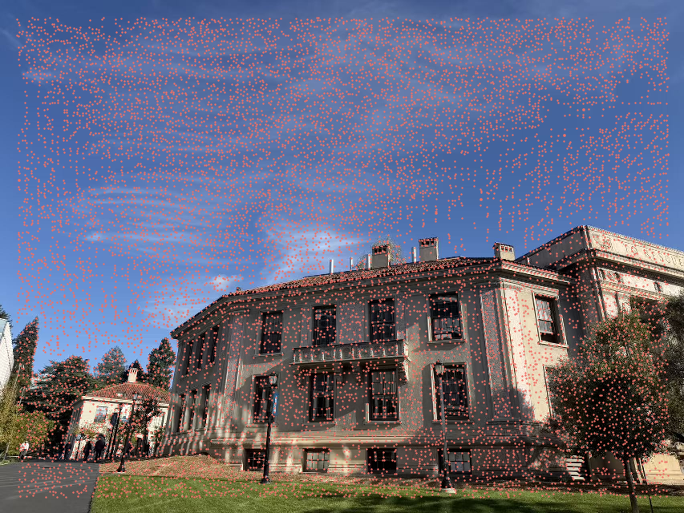

Some selected points are still in the sky or on repeated windows, so ANMS alone is not enough for reliable matching.
B.2 Feature descriptors
Extracting feature descriptors
I converted the image to grayscale and blurred it with a Gaussian filter (σ = 2). For each corner, I sampled an axis-aligned 8 × 8 patch from a 40 × 40 window, using a spacing of 5 pixels. Each descriptor contains 64 values.
I normalized each descriptor by subtracting its mean and dividing by its standard deviation. This makes the comparison less sensitive to brightness and contrast differences. I skipped patches with almost no variation.
d = (p − μp) / σp
Each retained descriptor has mean 0 and standard deviation 1. No rotation or wavelet transform is used.

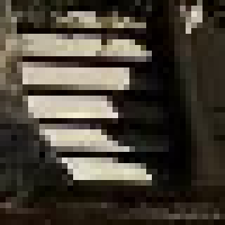
40 × 40 window
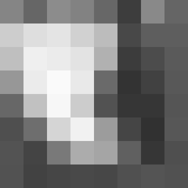
8 × 8 descriptor
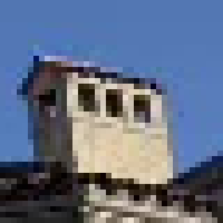
40 × 40 window
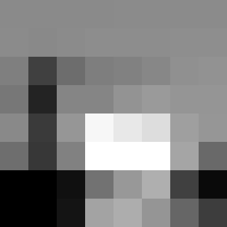
8 × 8 descriptor
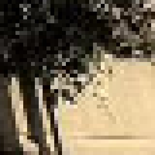
40 × 40 window
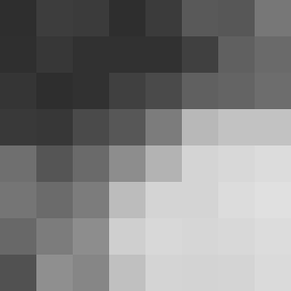
8 × 8 descriptor
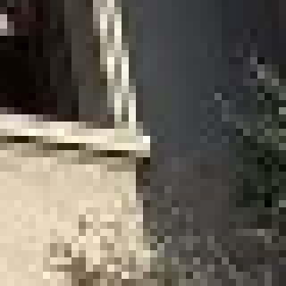
40 × 40 window
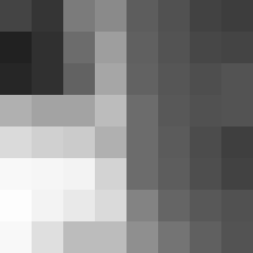
8 × 8 descriptor
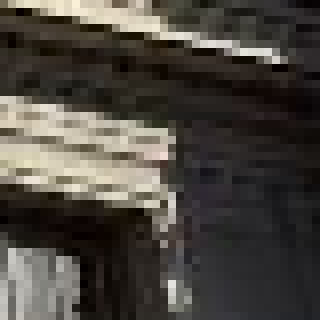
40 × 40 window
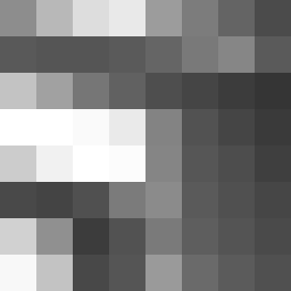
8 × 8 descriptor
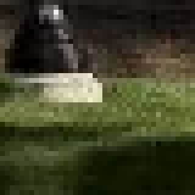
40 × 40 window
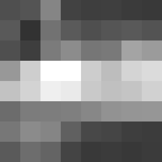
8 × 8 descriptorSix features from RANSAC inliers in the left building photo. Each pair shows the original color window and its normalized grayscale descriptor. The 8 × 8 cells are enlarged with nearest-neighbor display; only the display is clipped to [−2, 2]. Matching uses the full normalized values.
B.3 Feature matching
Matching the descriptors
I compared each source descriptor with the reference descriptors using SSD (sum of squared differences). A match passed the ratio test when the best SSD was less than 0.7 times the second-best SSD.
SSD(d1, d2) = Σk (d1,k − d2,k)2
SSDnearest / SSDsecond-nearest < 0.7
The threshold is a ratio of squared distances. I also require the two features to be mutual nearest neighbors.

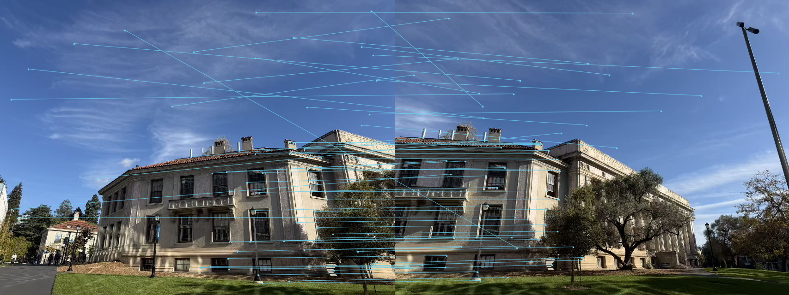
Several lines connect unrelated sky points. I used RANSAC to check the matches against a common homography.
B.4 Robust homography estimation
Estimating H with RANSAC
In each RANSAC trial, I randomly selected four pairs and computed H with the Part A homography function. I normalized the point coordinates before solving and skipped degenerate or singular estimates.
I counted a pair as an inlier when its forward reprojection error was less than 3 pixels in the working reference image. I kept the H with the most inliers, then fitted it again using the inliers.
ei = ‖project(H [xi, yi, 1]T) − [ui, vi]T‖ < 3 px
At most 2,000 trials, with an adaptive stopping estimate targeting 99.9% success and at least 100 trials. The random seed is fixed at 0.

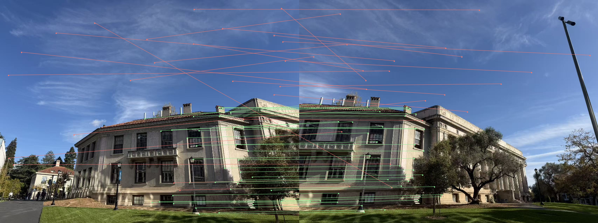
| Photo set | Pair | Matches | Inliers | Mean error (px) |
|---|---|---|---|---|
| Building and lawn | Left → middle | 61 | 38 | 1.05 |
| Building and lawn | Right → middle | 73 | 53 | 1.34 |
| Street corner | Left → middle | 136 | 104 | 1.33 |
| Street corner | Right → middle | 110 | 75 | 1.46 |
| Boat and riverbank | First → second | 109 | 73 | 1.05 |
Errors are measured on the fitted inliers; they do not measure alignment over the whole image.
Three automatic mosaics
The campus images are sampled to 854 × 640 pixels and the boat images to 972 × 648 pixels. The middle campus photo, or the second boat photo, is the reference. I then reuse Part A’s inverse warp, bilinear interpolation, edge weights, and two-layer blend.
For this comparison, I rendered the manual mosaics again at the same input resolution as the automatic ones, using the saved clicked points. The manual points were only used for the comparison.
Building and lawn

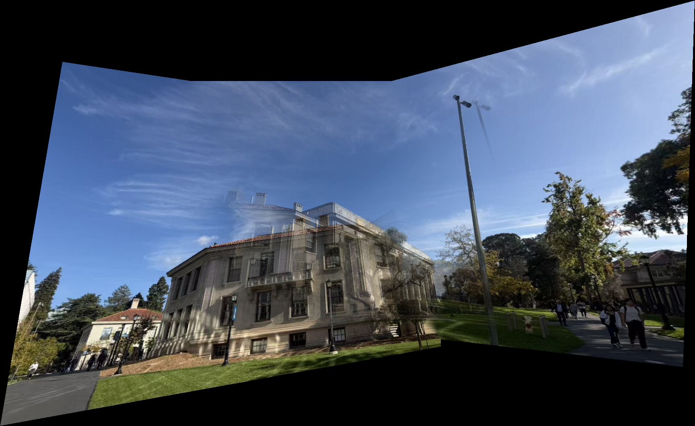

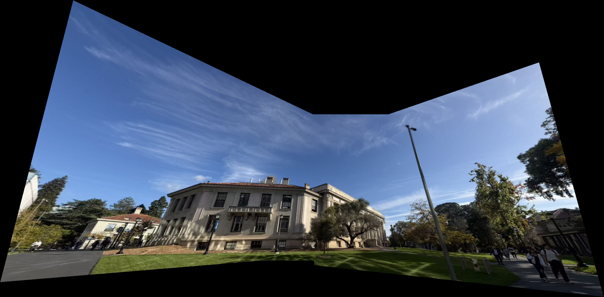
The manual result has a double roof edge and a faint second lamp pole. These are less visible in the automatic result, and the front windows line up more closely. The outer views are still stretched.
Street corner

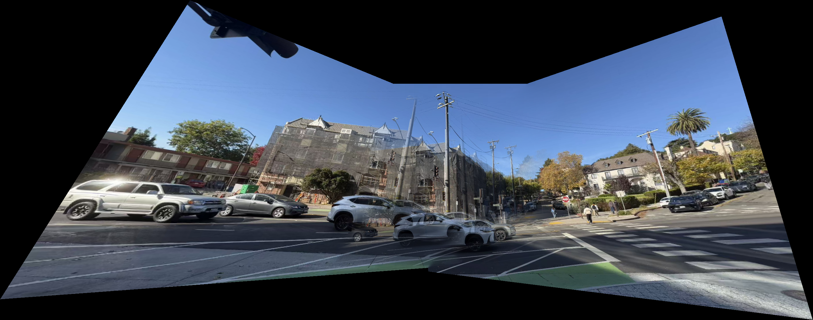

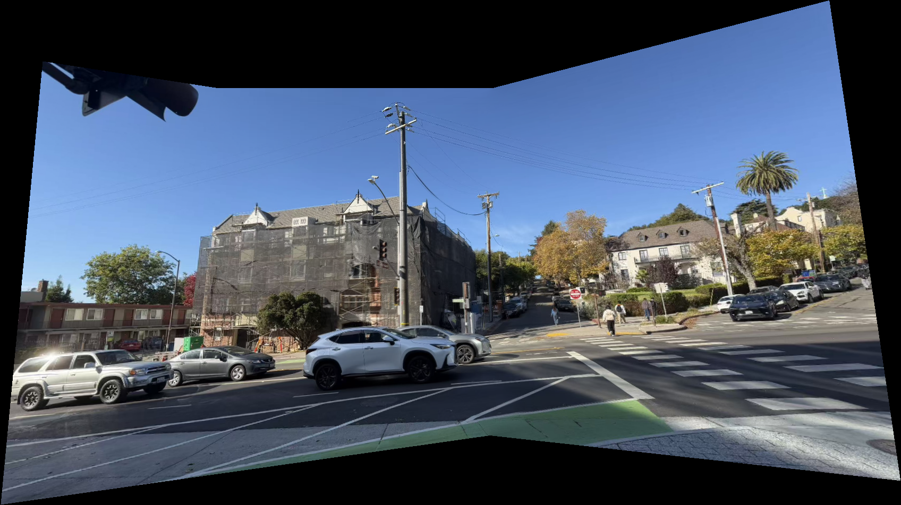
The automatic result has fewer double edges around the building. Some cars still have overlapping outlines. The traffic light at the upper left remains cut off because its support is outside the source photos.
Boat and riverbank


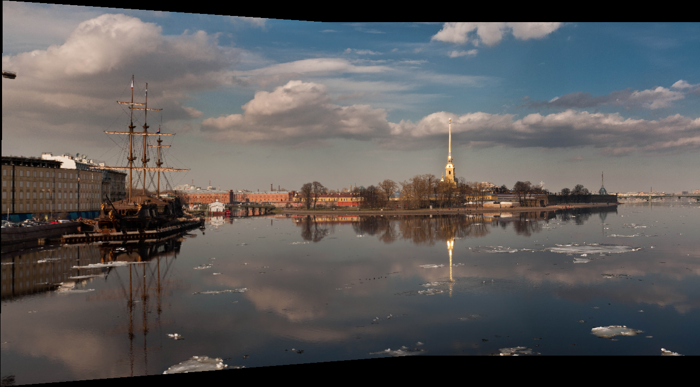
The automatic result stretches the left side less than the manual result. The ship and distant buildings line up, but branches and reflections remain blurred in the overlap. The water also changes brightness across the join.
Each result uses its own transformed corner bounds. Different canvas sizes come from different homographies; black areas have no source pixels.
B.5 Bells & whistles / Multiscale processing
Multiscale features
I used three pyramid levels for this extension. At each level, I detected Harris corners, ran ANMS, and extracted descriptors. Before downsampling, I applied a Gaussian filter with σ = 1 and kept every second pixel.
The levels are 854 × 640, 427 × 320, and 214 × 160 pixels for the building photos. Multiplying the corner coordinates by 1, 2, or 4 brings them back to the working-image coordinates. Descriptors from different levels can then match each other.

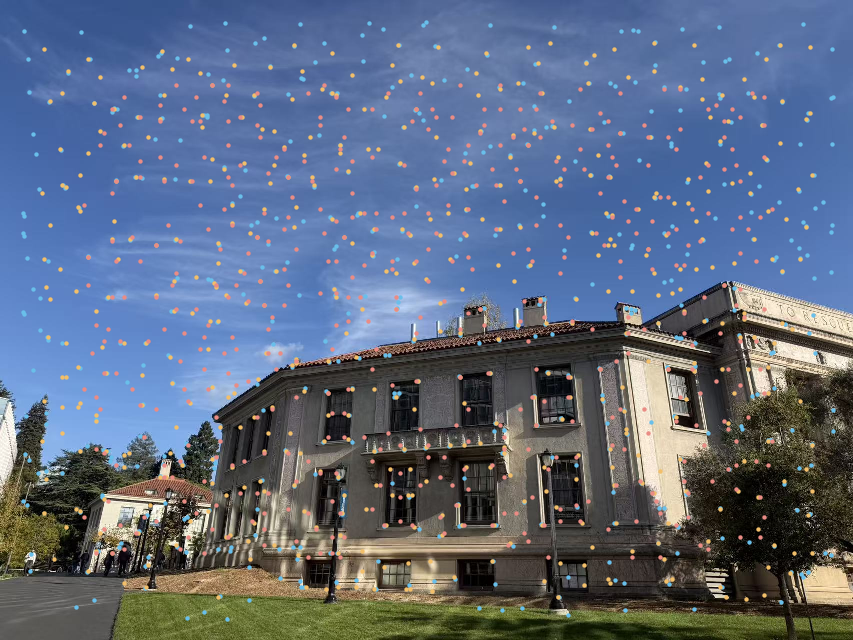
Level 0 · 1× coordinatesLevel 1 · 2× coordinatesLevel 2 · 4× coordinates
A 40 × 40 window at each level covers 40 × 40, 80 × 80, or 160 × 160 pixels of the original working image. The descriptors remain axis-aligned.

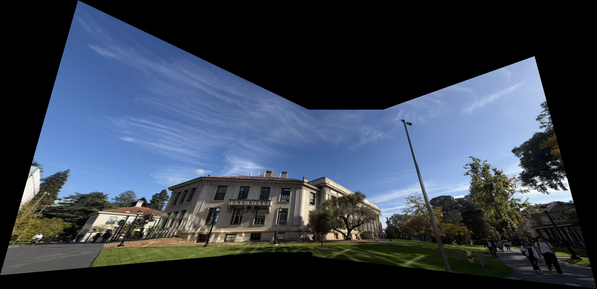
| Pair | Method | Matches | Inliers | Mean error (px) |
|---|---|---|---|---|
| Left → middle | Single scale | 61 | 38 | 1.05 |
| Left → middle | Three scales | 188 | 121 | 1.41 |
| Right → middle | Single scale | 73 | 53 | 1.34 |
| Right → middle | Three scales | 261 | 156 | 1.55 |
Both pairs have more inliers with three scales, but the visible difference in the mosaic is small. The average inlier errors are slightly higher. The feature count also rises from 500 to 1,500 per image, which affects this comparison.
In a separate test with synthetic texture and a half-size copy, all 226 retained matches were within 1 pixel of their expected coordinates.
Discussion
The sky matches in the building example show why I needed RANSAC after the ratio test. Some patches looked similar even though they came from different parts of the scene.
The automatic campus mosaics have cleaner building edges than the manual versions. The remaining double edges around cars show a limitation of fitting one homography to the whole scene.
Method reference: Brown, Szeliski, and Winder, Multi-Image Matching using Multi-Scale Oriented Patches (2005). I follow the assignment’s simplified patch descriptor and nearest-neighbor ratio test, with the provided Harris detector.